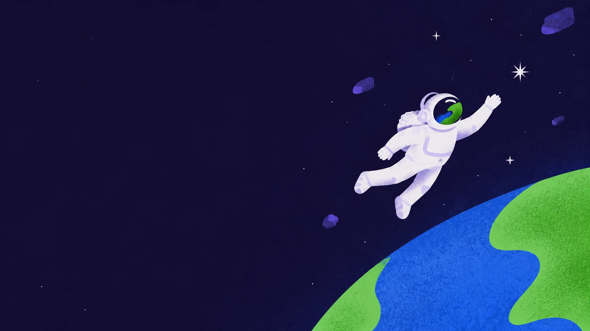
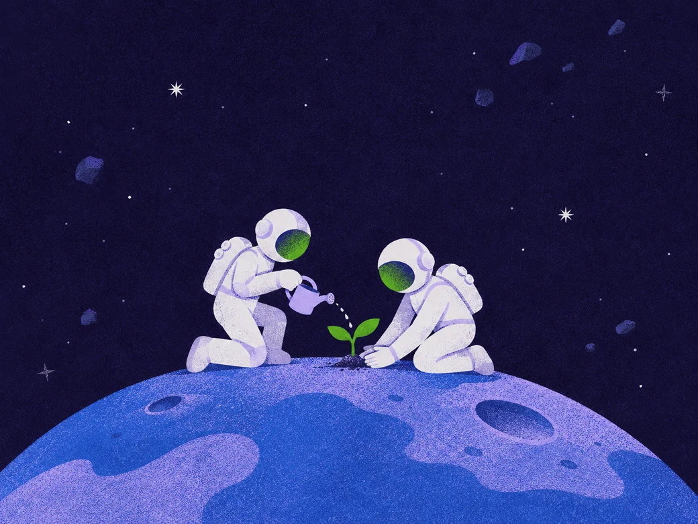

THE CURIOSITY01 /
Learn out loud.
Ask the small questions. Share the messy process. Turn “I don't know” into “let's find out.”

HELLO, WORLD. HELLO, EVERYONE.
A shared space for curious people to learn,
build, and make open source a little more human.
FOSS Commons is a community taking shape around a simple idea: knowledge grows when we share it.
We're here for free and open-source software, for learning by doing, and for the people behind every contribution. Bring your questions. Bring your half-finished ideas. There's room for you.
Ask the small questions. Share the messy process. Turn “I don't know” into “let's find out.”
Fix a little bug. Improve a tool you love. Build something that makes someone's day easier.
Make space for a different perspective. Help the next person take their first step.
You don't need to have it all figured out.
Pick a path. Follow your curiosity.

YOUR FIRST HELLO, WORLD.
New to open source? Start with a project you already use. A question, a thoughtful bug report, or a clearer sentence can be your first contribution.
A helpful starting point from Open Source Guides
ONE COMMIT CAN START SOMETHING.
Pick a small, well-defined issue in a project you like. Read the context, ask the maintainer if help is wanted, and work toward a useful change.
Open issues across the wider GitHub community
A FRIENDLY REMINDER FROM THE COMMONS
Designers, writers, translators, testers, organisers, and thoughtful humans: open source needs you, too.
A first question. A tiny fix. An idea worth sharing.
Whatever your starting point, make it an open one.